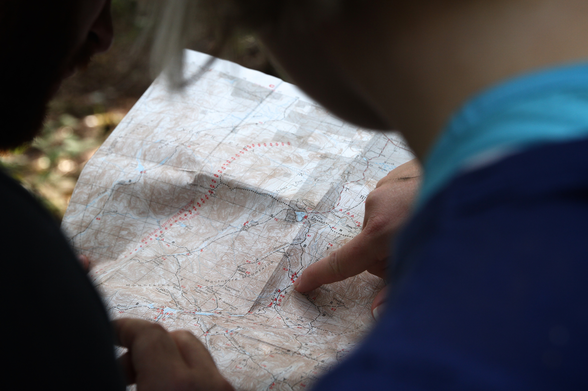
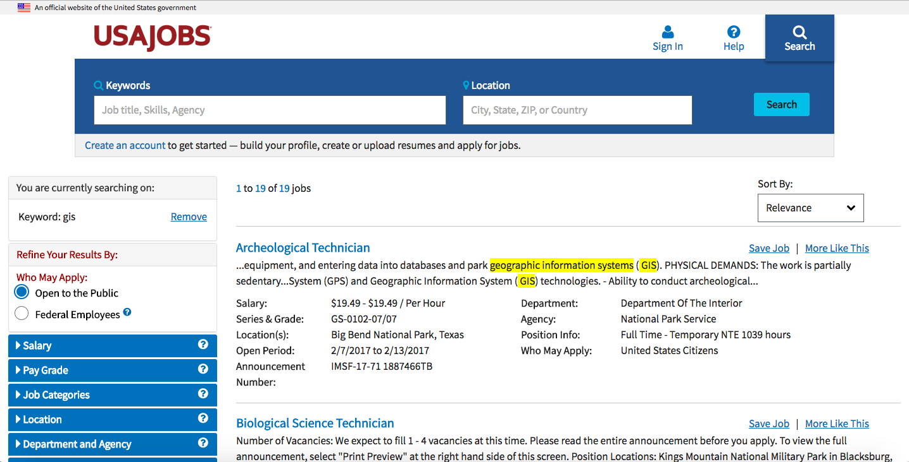
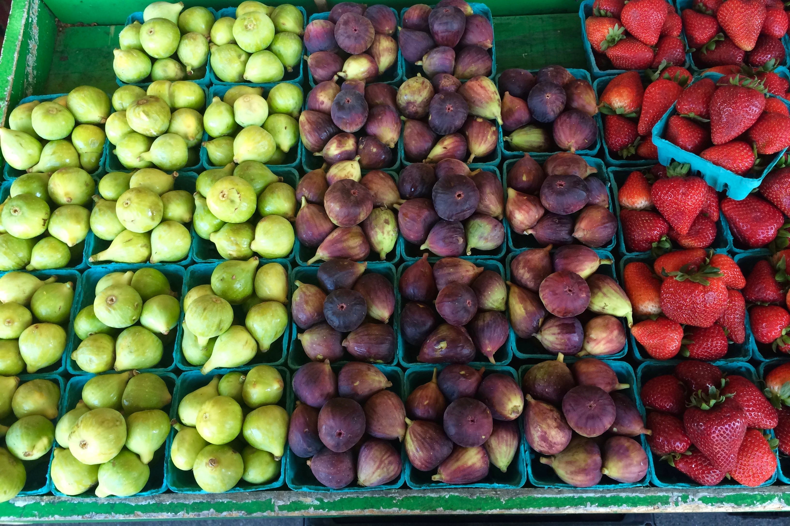
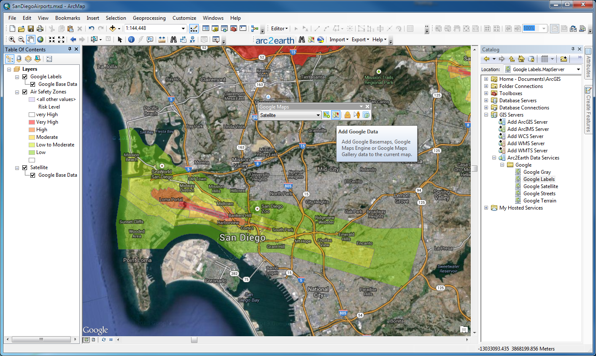
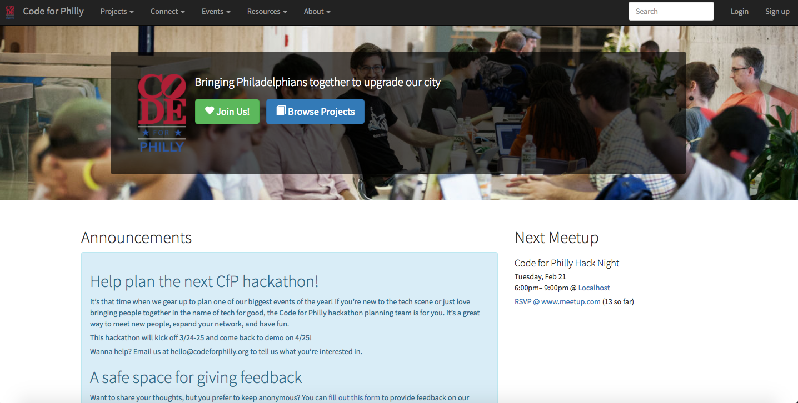
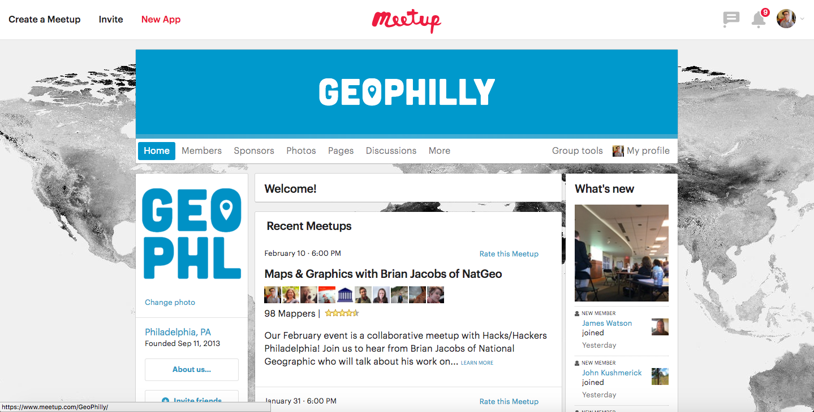
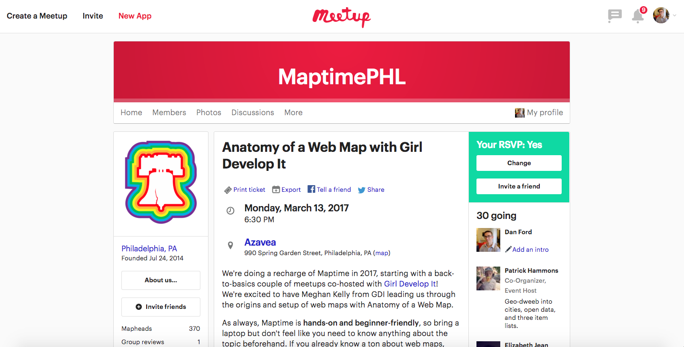
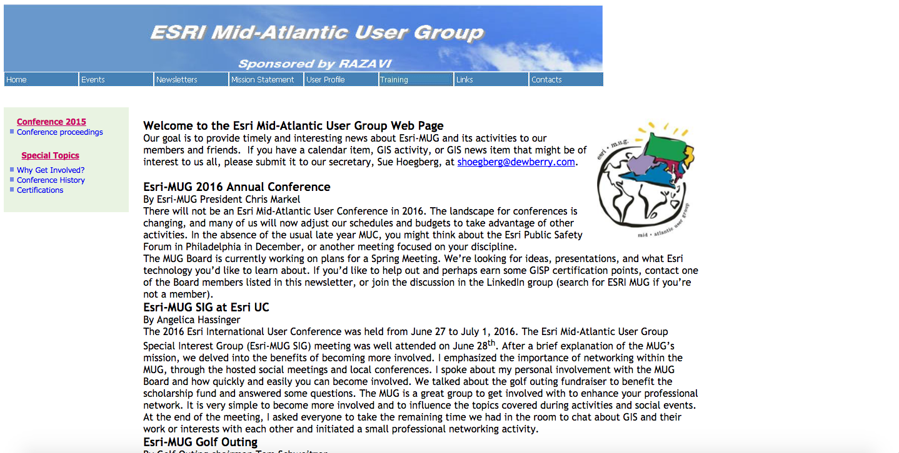

how to navigate the [modern] world of geospatial analysis
about me
Find me on Twitter @DanJFord
about Azavea
Software development related to GIS/geospatial analysis is one field - let's transition into a talk about careers in the GIS world.
about GIS
But first, what is 'GIS'?
GIS = geographic information systems
careers & tips
potential careers in the geospatial world

Cartographer

Geospatial Developer

Designer
Data Scientist

Urban Planner

Siting Specialist
 Environmental Consultant
Archeologist
some areas of focus
academia
Author or support research studies using GIS analysis methods.
 academia
academia
government
 government
engineering
 engineering
engineering
energy
 energy
energy
natural resources
natural resources
health services
 health services
data science
 data science
data science
journalism
journalism
tips
Tip 1
log experience with various software
 Esri ArcGIS
QGIS

Mapbox

Carto

Leaflet
Tip 2
build a diverse portfolio
start by understanding data
go in the field - understand the data you're using by collecting it yourself
contribute to open source projects
gain experience through internships or fellowships
then, build a website to document your work
share your work on blogs, social media, etc.
Tip 3
join the local tech community
The really common strategy for learning a new language, like Spanish, is to immerse yourself in the culture - surround yourself with native speakers. The same principle applies for learning tech skills like GIS analysis or programming languages.
| Code for America |
| GeoPhilly / Maptime |
| Local User Groups |
| Conferences |




Foss4GNA, NACIS, JS.Geo, LocationTech